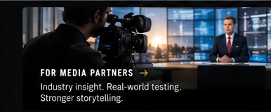
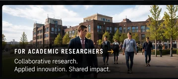
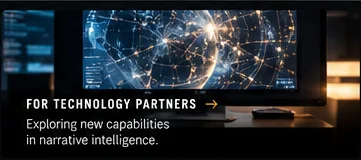
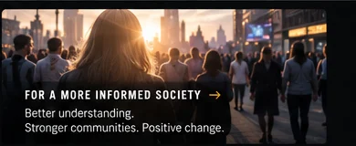

MEDIA INSIGHT
Exploring how stories take shape.
THE NARRATIVE LENS LTD
The Narrative Lens Limited is developing a Narrative Intelligence Platform to explore how narratives emerge, evolve and influence public understanding.
Through research, technological innovation and collaboration, we aim to bring new capabilities to narrative analysis — working alongside the University of Salford and engaging with the media industry.
Exploring how stories take shape.
Turning information into intelligence.
Working across academia and industry.
Developing new analytical capabilities.
Supporting a more informed society.
ABOUT US · RESEARCH & COLLABORATION
The Narrative Lens Limited brings together an ambition for deeper narrative understanding with research-led technology development.
We are working alongside the University of Salford to support the research, testing and development of a Narrative Intelligence Platform.
Our approach combines technological exploration, responsible research and practical engagement with organisations working across the media landscape.
We welcome media organisations interested in contributing industry expertise, real-world testing and evaluation.
EXPLORE COLLABORATIONTHE VISION
Our ambition is to develop a platform that supports the study of how narratives form, travel and change — and to test its potential through responsible research and practical industry collaboration.
Researching ways to understand emerging and evolving narratives.
Exploring technological capabilities through an iterative development process.
Learning through practical testing and input from media stakeholders.
Keeping transparency, rigorous evaluation and public value in view.
OPPORTUNITIES TO COLLABORATE
We invite media organisations to contribute industry expertise, participate in structured testing and evaluation, and help inform the development of emerging narrative intelligence capabilities.

Industry expertise, real-world testing and practical evaluation.

Collaborative research, shared learning and applied innovation.

Exploring technological capabilities for narrative intelligence.

Supporting better understanding and more informed communities.
CONTACT US
Interested in the Narrative Intelligence Platform, research collaboration or potential media partnerships? We'd welcome an introduction.